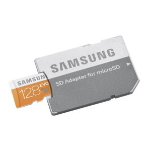

RPi kurmak icin Mikro SD kart gerekli. Eger aldiginiiz paketten icinde RPi isletim sistemi olan bir SD cikmadiysa dizustu bilgisayardan kurmaniz lazim . Ayri puruz benim bilgisayarda SD okuyucu var (daha buyuk). SD / MicroSD çevirici aldık,

Ubuntu'ya bunu taktik. Ubuntu'da Disks programı ile takılan disk
bulunur ve FAT için formatlanır. Şimdi RPi işletim sistemi imajını
SD'ye "yakma" zamanı geldi. [2]'den "Raspberry Pi İmager for Ubuntu"
indirilir, bir deb dosyası.
sudo apt-get install qml-module-qt-labs-settings
problem verdi,
sudo apt --fix-broken install
düzeltti. Ardından alinan deb uzerinde,
sudo dpkg -i imager_1.4_amd64.deb
Simdi
rpi-imager
ile program başlatılır. Çıkan listede "İşletim Sistemi Seç (Choose OS)" için ilk görülen Raspberry Pi seçilebilir. "SD Kart Seç (Choose SD Card)" için daha önce formatlamış olduğumüz kart seçilir. Tamam dedikten sonra bu işlem 1 GB üzerinde bir indirme yapacak, yani hızlı ve yeterince kapasitesi olan bir bağlantı iyi olur.
Kaynaklar
[1] https://www.raspberrypi.org/documentation/installation/noobs.md
[2] https://www.raspberrypi.org/downloads/